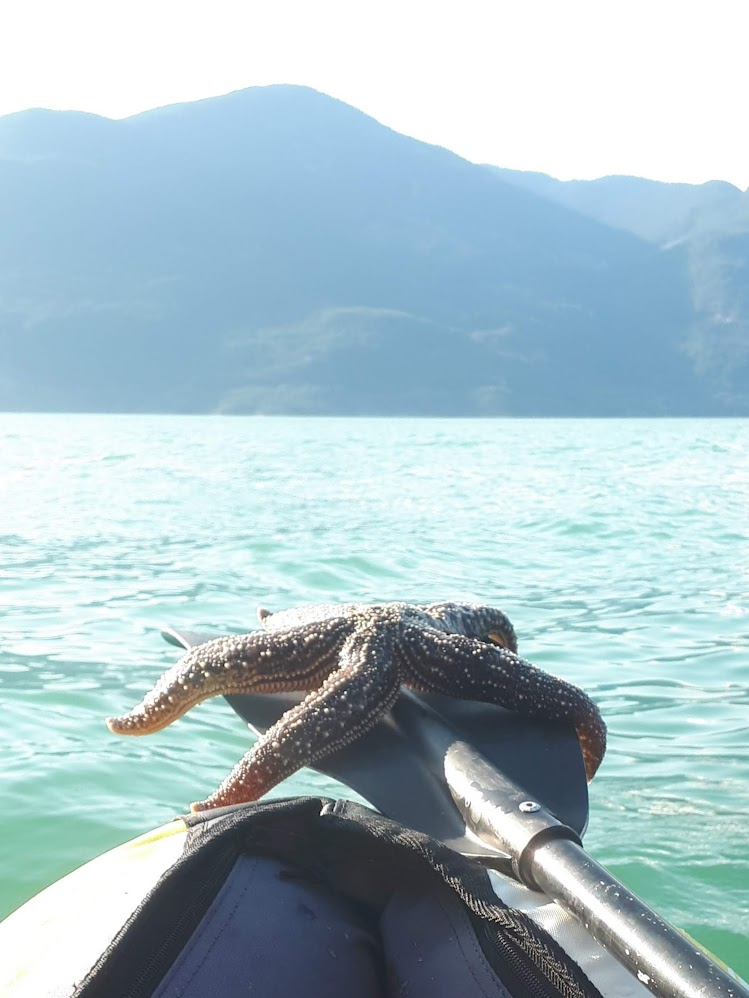
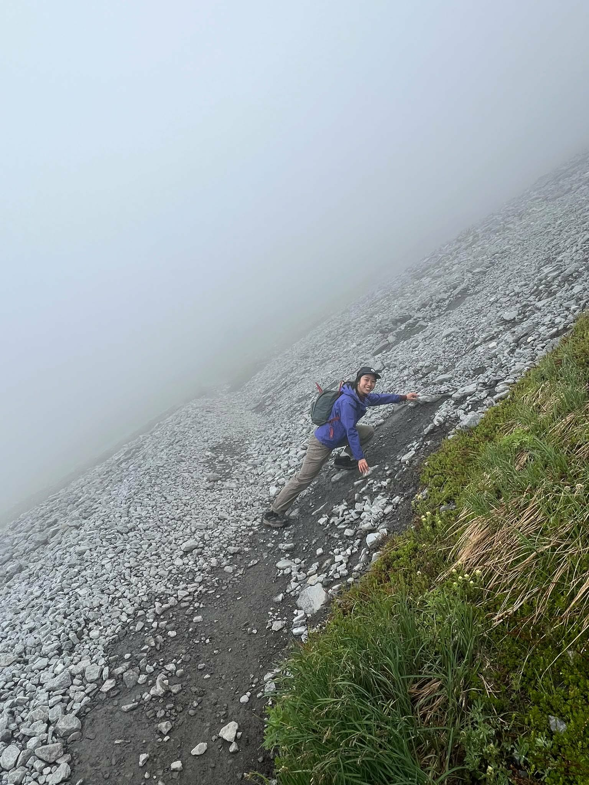

Lifemaxxing
Hobbies
Things I do when I'm not staring at a screen


I love old lady activities
Gardening
This year's plant obsession are dahlias and peony poppies. In addition to flowers, I grow chayote, corn, strawberries, blueberries, and other vegetables. I wouldn't recommend growing corn.



Actual
Water sports
fig. 1 - Nationals in Welland, Ontario, 2023, silver. Team UBC Current Blue
fig. 2 - Outrigger canoeing at Dragonzone, False Creek


Why I need a 4x4
(Any) Physical activity
Sometimes I run, other times I lift things and put them down again. Anything for the endorphins and to not go insane.
Side quests
Other hobbies
- Collecting rocks I like rocks.
- Tetris Accepting tetr.io duel challenges.
- Calligraphy Oblique dip pens, nibs, brush pens, the full spiral.
- Sewing and alterations Started with a grad dress that didn't fit.